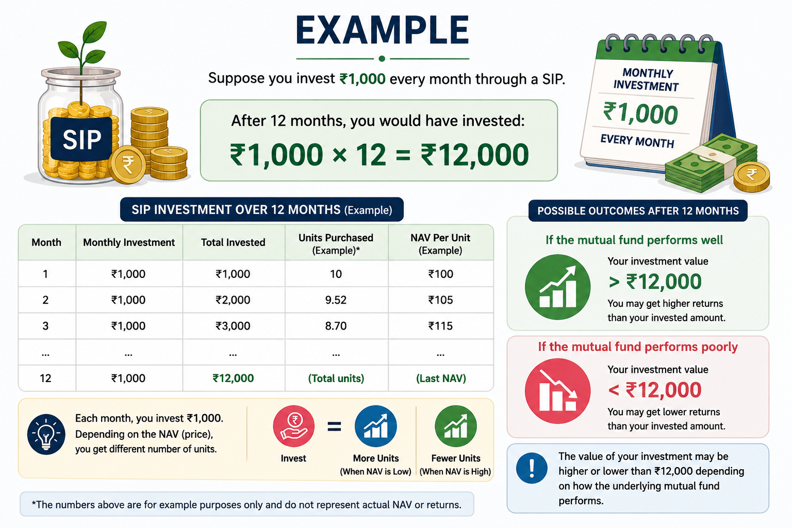

SIP (Systematic Investment Plan) is a simple way of investing a fixed amount of money regularly in a mutual fund, usually at a chosen interval such as monthly.
Instead of investing a large amount all at once, SIP allows you to invest smaller amounts consistently over time. For example, an investor may choose to invest ₹500 every month into a mutual fund.
How Does SIP Work?
When you start a SIP, you choose:
• The amount you want to invest regularly
• The frequency of investment, such as monthly
• The mutual fund in which you want to invest
The money is used to purchase units of the mutual fund. Since the market price of these units changes over time, the number of units purchased can vary from one investment to another.
Why Do People Use SIP?
SIP can help investors develop a regular investing habit instead of trying to decide when to invest a large amount. It can also provide the benefit of investing across different market conditions.
A key idea behind SIP is consistency. Investing regularly over a long period may allow your investment to benefit from compounding, although returns are never guaranteed.
Simple Example

Suppose you invest ₹1,000 every month through a SIP.
After 12 months, you would have invested:
₹1,000 × 12 = ₹12,000
The value of your investment may be higher or lower than ₹12,000 depending on how the underlying mutual fund performs.
Important Note
SIP is not a type of investment by itself. It is a method of investing regularly in a mutual fund or similar investment product.
SIP does not guarantee profit, and mutual fund investments are subject to market risks. Before investing, understand the product, risks, fees, and your own financial goals.
Remember :SIP is about building a disciplined investing habit—not about guaranteeing quick returns.